Contents
Codigo para la generacion de figuras para el articulo
filename = 'placas/carro (1).jpg';
a = imread(filename);
figure(1); imshow(imresize(a, 0.1));
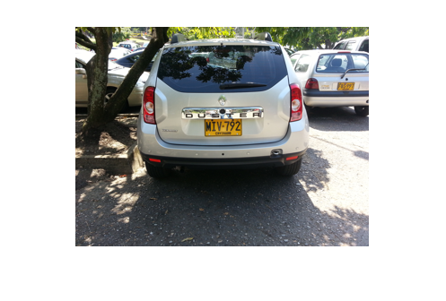
Proceso de corte inicial de la imagen
[fil, col, ~] = size(a);
f_min = floor(fil * 0.4);
f_max = ceil(fil * (1 - 0.2));
c_min = floor(col * 0.2);
c_max = ceil(col * (1 - 0.35));
a = a(f_min:f_max, c_min:c_max, :);
figure(2); imshow(imresize(a, 0.2));
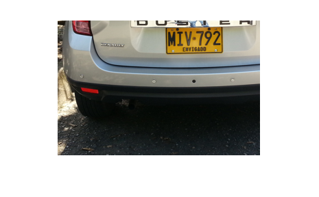
Descomposicion en componentes de color
[b, y, s, ~] = componentes(a);
figure(3); imshow(imresize([b, y; s, max(b, y)], 0.2));
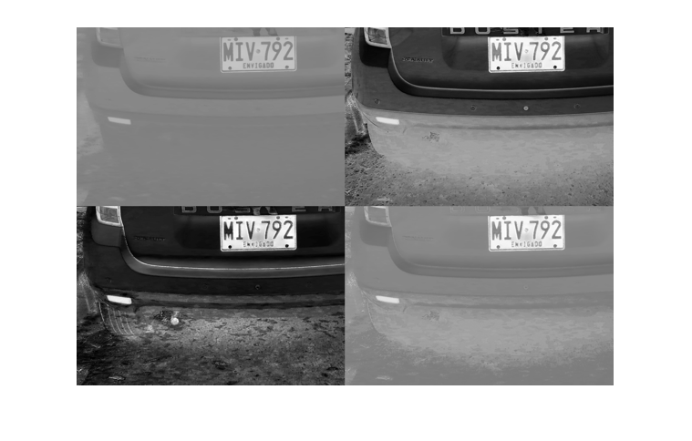
Dilatacion inicial para unir elementos
d = max(b, y);
ee = strel('square', 3);
for i = 1:2
d = imdilate(d, ee);
end
figure(4); imshow(imresize(d, 0.2));
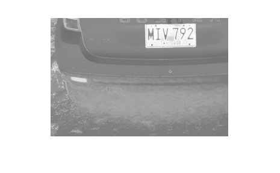
Binarizacion de la imagen
d(d < 200) = 0;
d(d > 0) = 255;
figure(5); imshow(imresize(d, 0.2));
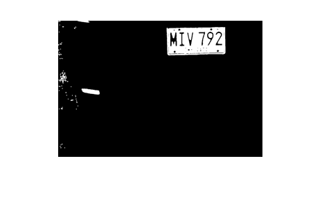
Limpieza de ruido de la imagen
for i = 1:3
d = imdilate(d, ee);
end
for i = 1:6
d = imerode(d, ee);
end
for i = 1:3
d = imdilate(d, ee);
end
d = imclearborder(d);
figure(6); imshow(imresize(d, 0.2));
Localizacion de elementos y areas
[l, num] = bwlabel(d);
figure(7); imagesc(l); colormap(jet);
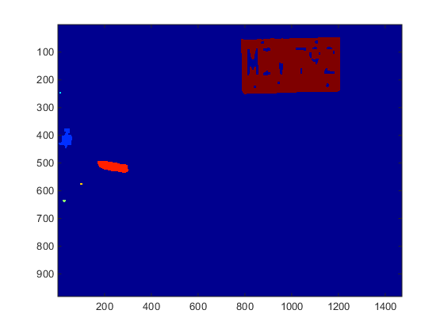
Ubicacion del area mayor y remocion de las demas
area = [];
for i = 1:num
e = d * 0;
e(l == i) = 1;
areaI = sum(e(:));
area = [area, areaI];
end
areaM = max(area);
obj = find(area == areaM);
e = d * 0;
e(l == obj) = 255;
figure(8); imshow(imresize(e, 0.2));
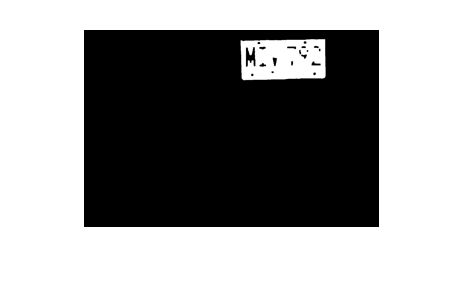
Cortado de la imagen inicial del area obtenida
[fil, col] = find(e > 0);
f_min = min(fil);
f_max = max(fil);
c_min = min(col);
c_max = max(col);
a = a(f_min:f_max, c_min:c_max, :);
[fil, col, ~] = size(a);
if(fil > col)
a = rot90(placa, 3);
end
figure(9); imshow(a);
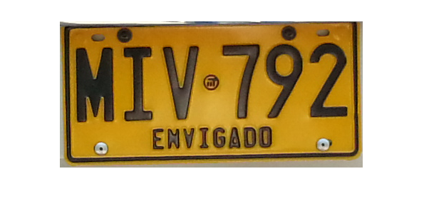
Convertir imagen a escala de grises
img = rgb2gray(a);
figure(10); imshow(img);
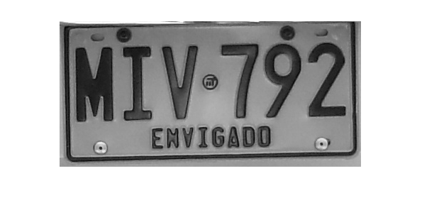
Media de intensidad por columna
mediaColumnas = mean(img);
figure(11); plot(mediaColumnas);
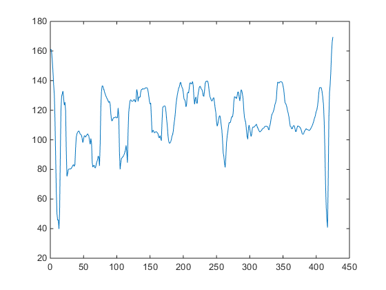
Normalizacion del brillo, media de medias
brillo = mean(mediaColumnas);
brillo
if(brillo < 100)
img = img * (120 / brillo);
elseif(brillo > 140)
img = img * (120 / brillo);
end
brillo =
114.1597
Diagrama de cajas para los promedios de intensidad
figure(12); boxplot(mediaColumnas);
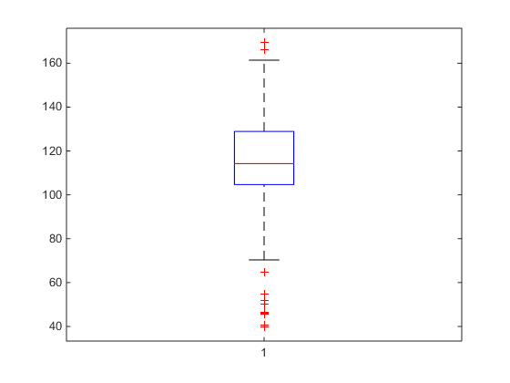
Binarizacion a partir del umbral calculado
p_0 = prctile(mediaColumnas, 0);
p_25 = prctile(mediaColumnas, 25);
min_rgb = floor(p_25 - ((p_0 / p_25) * 5));
img(img < min_rgb) = 255;
img(img < 255) = 0;
figure(13); imshow(img);
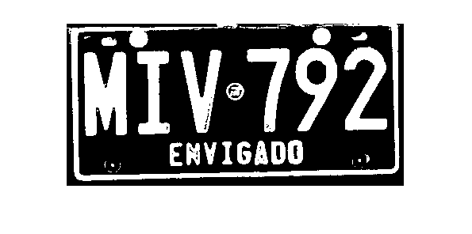
Limpieza de ruido con elemento estructurante
[fil, col, ~] = size(img);
minSize = floor((fil * col) * 0.01);
img = bwareaopen(img, minSize);
ee = strel('square', 3);
img = imerode(img, ee);
img = imclearborder(img);
img = imdilate(img, ee);
figure(14); imshow(img);
Eliminacion de ruido posterior a partir de los tamaños y asignacion de areas
[l,num]=bwlabel(img);
y_range = fil * 0.4;
x_range = col * 0.2;
elm_count = 0;
areas = [];
for i = 1:num
[fil,col] = find(l==i);
y_min = min(fil(:));
y_max = max(fil(:));
x_min = min(col(:));
x_max = max(col(:));
if((y_max - y_min) > y_range && (x_max - x_min) < x_range)
areas = [areas; x_min, y_min, (x_max - x_min), (y_max - y_min)];
elm_count = elm_count + 1;
else
img(l == i) = 0;
end
end
figure(15); imshow(img);
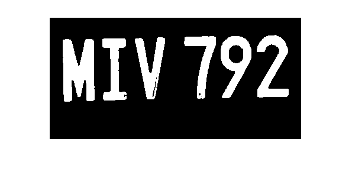